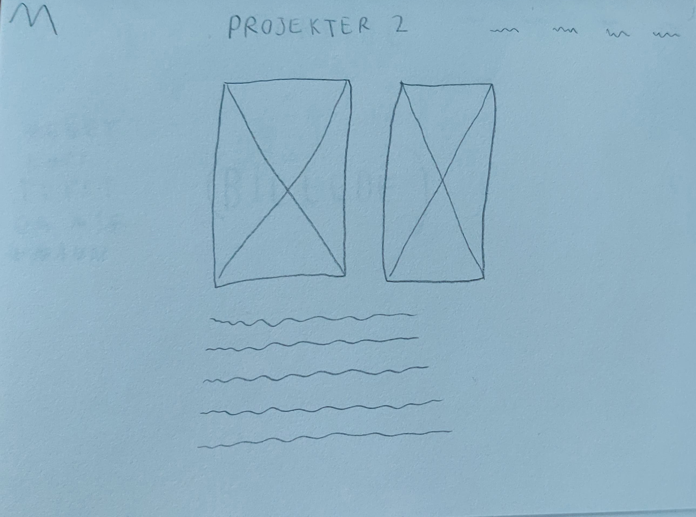
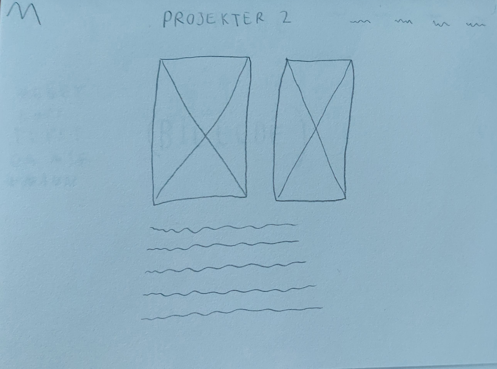

Ovenfor ses skitsen som jeg har lavet til min forside til mit nye portofolio. Ligesom på mit originale portfolio, så ville jeg gerne have et billede der fyldte hele min forside. Jeg ville dog hellere have mere ”whitespace” på mit nye billede i forhold til det gamle, så det hang mere sammen med de andre sider som jeg gerne ville have skulle have en ren hvid baggrund.
 

Jeg var i tvivl om hvorvidt jeg skulle sætte mit indhold op i en kolonne eller to kolonner, så derfor startede jeg med at lave to skitser. Jeg spurgte flere personer om hvilken de foretrak, og fik det bedste feedback på skitsen med en enkelt kolonne. Det var samtidig også den jeg personligt selv bedst kunne lide, men nu vidste jeg at flere andre havde den samme holdning.
På mit forrige portfolio havde jeg intet logo og derfor havde jeg i stedet et punkt i menuen der hed ”Hjem” for at kunne komme til forsiden. Til dette portfolio valgte jeg så at lave et logo som hermed også kunne bruges til at komme tilbage til forsiden.
Jeg ville gerne have et logo der havde noget med mit navn at gøre, og derfor lavede jeg nogle skitser. I sidste ende valgte jeg at fortsætte med den mest simple af dem, den med et ”M” hvor der er skåret et stykke ud af det.